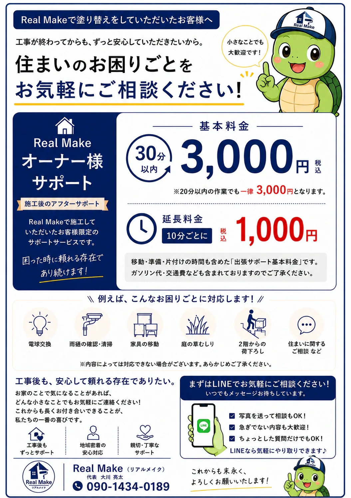

職人直営
現場を知る職人が状態を確認し、住まいに必要な施工をご提案します。

こんにちは。
Real Make（リアルメイク）代表の大川です。
私は17歳で塗装職人の道に入り、足場工としての経験も積みながら、24年以上にわたり建築業に携わってきました。
桶川市で生まれ育ち、現在も桶川市で暮らしています。
私生活では3人の男の子の父親です。子どもたちはサッカーを頑張っていて、休日は試合の応援に行くのが楽しみの一つです。
仕事では、お客様が安心して工事を任せられるよう、分かりやすい説明と丁寧な施工を何より大切にしています。
これからも地元の皆さまに、「大川さんに頼んで良かった」と思っていただける仕事を一つひとつ積み重ねていきます。
現場を知る職人が状態を確認し、住まいに必要な施工をご提案します。
工事範囲、使用材料、工程を整理し、内容が分かる形でご案内します。
高圧洗浄、下地補修、下塗りなど、仕上がると見えにくい工程も大切にします。
塗り替えたら終わりではなく、住まいのお困りごとを相談できる関係を大切にしています。
弊社で塗り替えをしていただいたお客様限定で、住まいのお困りごとのサポートを行っています。工事が終わったら終わりではなく、長くお付き合いできる存在を目指しています。
初めてReal Makeをご利用になる桶川市の戸建てにお住まいの方には、30分無料サポートもご用意しています。

| 屋号 | Real Make（リアルメイク） |
|---|---|
| 代表者 | 大川 亮太 |
| 所在地 | 〒363-0020 埼玉県桶川市上日出谷南2-1-19 |
| 電話 | 090-1434-0189 |
| 営業時間 | 8:00〜18:00 |
| 創業 | 2010年 |
| 対応工事 | 外壁塗装・屋根塗装・コーキング・防水・足場・雨樋・内装など |
| 対応地域 | 桶川市・北本市を中心に、埼玉県全域 |